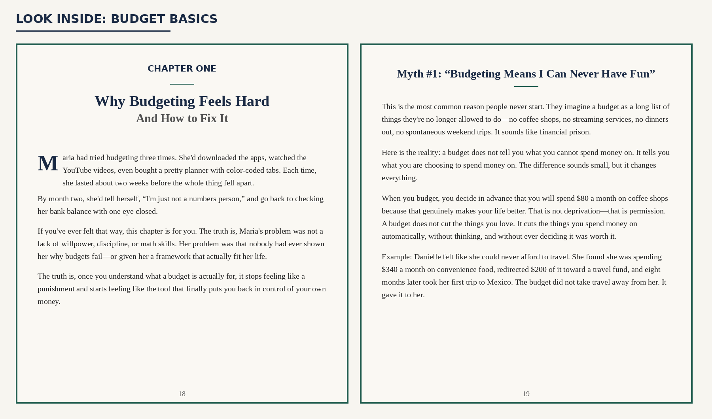

Budget Basics
A Beginner’s Guide to Managing Money at Home and Growing Your Side Hustle or Small Business
Clear, practical guidance for people who want to understand where their money goes, build a budget that fits real life, and apply the same financial thinking to a side hustle or small business.
Paperback · ISBN 9798180445483 · Independently published

- 122 pagesPractical guide
- 2 partsHome + business
- 12 chaptersStep-by-step learning
- TemplatesPut it into practice
Money guidance without the jargon
Budget Basics is written for anyone who has ever felt confused, overwhelmed, or just plain lost when it comes to money. Whether you are living paycheck to paycheck, dreaming of launching a side hustle, or simply want to understand where your dollars actually go each month, the book is designed as a practical starting point.
No finance degree required. The lessons move from understanding your money habits and everyday household budget to pricing, cash flow, bookkeeping, taxes, and sustainable growth for income you create yourself.
One guide for personal money and small-business money
Part One — Your Home Budget
- Money mindset and common budgeting myths
- Tracking income and spending
- 50/30/20, zero-based and envelope budgeting
- Debt payoff and emergency funds
- Cutting costs without cutting joy
- Short-, medium- and long-term savings
Part Two — Small Business & Side Hustle Budget
- Separating business and personal money
- Building a first business budget
- Pricing products and services
- Managing cash flow
- Simple bookkeeping and tax deductions
- Growing without breaking the budget
From “where did my money go?” to a plan you can use
Choose a budgeting method
Compare three beginner-friendly approaches and learn how to choose one that fits your personality, income, and preferred level of tracking.
See your real numbers
Work through income, spending, bank statements, net worth, and a 30-day spending audit before building the budget.
Handle debt and savings
Learn debt avalanche and snowball strategies, emergency-fund basics, and ways to save for goals at different time horizons.
Build the business side
Move into business budgeting, pricing, cash-flow planning, record keeping, tax deductions, and sustainable growth.
Built to be used, not just read
Each chapter ends with a Quick-Start Action. The back of the book also includes a personal budget template, business budget template, debt payoff tracker, glossary of key terms, and recommended tools and resources.

Look inside Budget Basics — Chapter One begins by addressing why budgeting feels hard and common money myths that keep people stuck.
A starting point for everyday money and income you create
Designed for budgeting beginners, households trying to get a clearer picture of their finances, freelancers and gig workers with variable income, and people building a side hustle or small business who need the financial basics explained in plain language.
From Open Theory Cove
Practical books designed to turn useful ideas into something you can put to work.